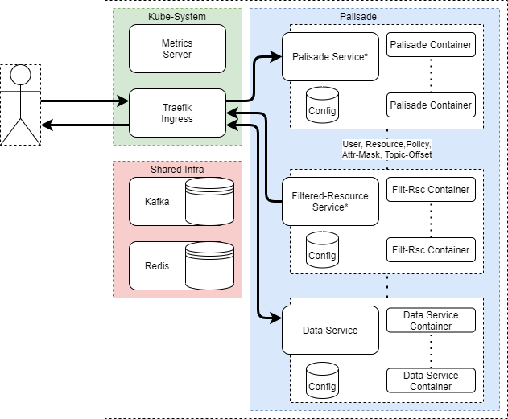
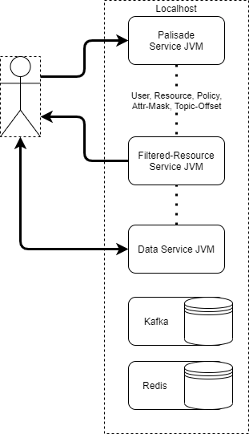

Deployments
How might the system be deployed?
Kubernetes (Locally or AWS EKS)
You will need:
- Docker v19.03+ for building containers
- Kubernetes v1.21+ for cluster orchestration and container management
- Helm v3+ for deploying to Kubernetes and managing deployments

* Service in this case means K8s Service resource, which acts as an in-cluster DNS name.
Palisade primarily supports deployment through helm to a K8s cluster.
This allows for containerisation, scaling and auto-recovery on service failure.
Palisade is regularly deployed to local K8s clusters for manual developer testing, and to AWS EKS for CI/CD automated testing.
In this deployment, containers for each microservice are managed by various K8s workload resources, notably Deployment and Statefulset.
These can then be scaled up or down as appropriate, with the optional metrics-server responsible for horizontal auto-scaling.
The Palisade services are accessed through a Traefik ingress, which is installed into the kube-system namespace rather than with the rest of the Palisade services (the palisade namespace in this diagram).
Each microservice is responsible for its own volume mounts, configuration, and ingress-route if any.
Redis and Kafka can be either installed into the same namespace as the Palisade services, or in a separate namespace not managed by Palisade (the shared-infra in this diagram).
Palisade can be configured via configuration yaml files, to use different clients, and therefore work with different technologies, see Palisade Clients.
Further configuration can then point the Data and Resource Service to different data stores which can be located outside of the Palisade deployment.
JVM Processes
You will need:

Palisade also supports running as bare JVM processes outside of K8s, but of course without any of the benefits provided by K8s.
In this deployment, a separate JVM is spawned for each microservice and will run unmanaged. This means services will not recover from crashes or critical errors.
The Palisade services are accessed through their localhost address and port. Each microservice uses the local filesystem without any additional volume mounts.
Palisade can be configured via environment variables passed to the jars, to use different clients, and therefore work with different technologies, see Palisade Clients.
Further configuration can then point the Data and Resource Service to different data stores which can be located outside of the Palisade deployment.
n.b. Redis and Kafka are still required in some form, whether exposed in a local K8s cluster, running as local processes, or hosted externally as a SaaS.